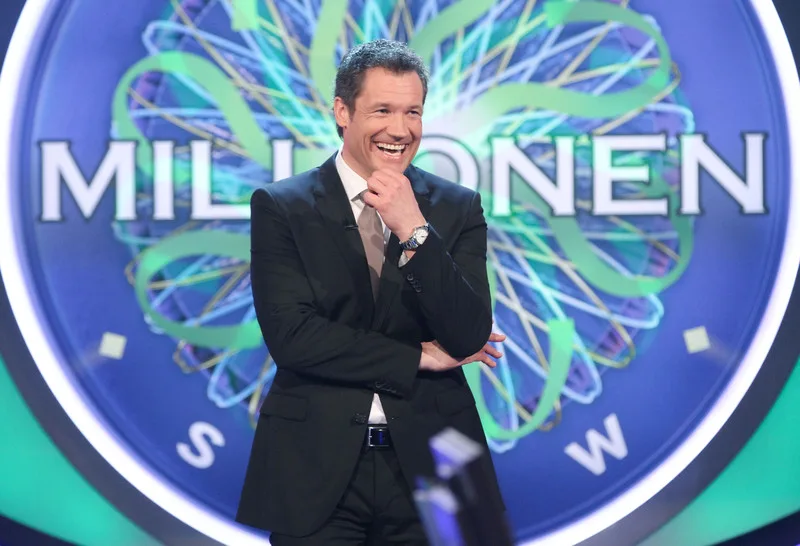

The History

"Who Wants to Be a Millionaire?" was originally developed in 1998 in the UK under the name "Who Wants to Be a Millionaire?". The innovative concept of combining a quiz format with suspense, strategy, and entertainment quickly became a global phenomenon. The show premiered in Germany on September 3, 1999, on RTL. Hosted by Günther Jauch, who has since become the face of the German version, the show set new standards in German television from the very beginning.

In the German version of "Who Wants to Be a Millionaire?", contestants must answer 15 multiple-choice questions that get more difficult with each level. The grand prize is 1 million euros. To help, three lifelines are available: the 50:50 lifeline, the audience lifeline, and the phone-a-friend lifeline. Additionally, a risk variant allows contestants to choose an extra lifeline, the additional lifeline, which lets them ask a person in the audience for help. This decision is final, adding extra suspense.

The success in the UK led to the format being licensed and adapted in over 100 countries. In Germany, the show began on September 3, 1999, on RTL under the title "Who Wants to Be a Millionaire?", hosted by Günther Jauch, who is still the face of the show. Jauch has captivated viewers with his charming and humorous hosting style, making the show a staple of German television.

The German version differs in some ways from the UK version. For example, in Germany, there is a risk variant where contestants can choose whether to use an additional safety level. There are also regular celebrity specials where stars play for charity.

In Germany, the first million-euro win by Eckhard Freise in 2000 remains unforgettable. Contestants like Ralf Schnoor and Leon Windscheid also made history with their knowledge. Celebrity specials brought exciting moments, like with Oliver Pocher or Barbara Schöneberger. Especially thrilling were risky decisions during the million-euro question or funny mistakes on easy questions that had the audience laughing.
"Who Wants to Be a Millionaire?" remains a fan favorite to this day. The mix of knowledge, strategy, and thrill, along with the host's friendly interactions with contestants, makes the show a true classic that is still captivating after over 20 years.